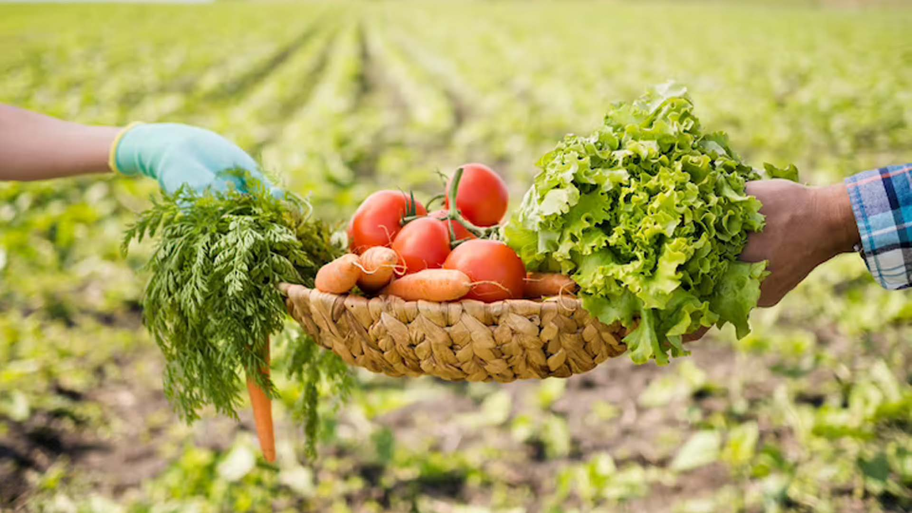

About Us
Welcome to our dedicated platform for organic farming in Palavanatham Village. Our site is designed to create a robust connection between buyers who seek high-quality organic produce and the local farmers who produce it with care and dedication. We are committed to promoting sustainable agriculture practices and supporting local farmers in their efforts to deliver fresh, healthy products to the market.
Our platform serves as a vital resource for those who are passionate about organic farming. Buyers can explore a variety of organic products directly from the source, ensuring they receive the freshest and most sustainable options available. For farmers, our site offers a valuable channel to showcase their products and reach a wider audience, thus facilitating better market access and opportunities for growth.
In addition to connecting buyers and sellers, we provide comprehensive information on agricultural diseases and management practices to support the health of crops and ensure optimal yields. Our site also highlights various government schemes designed to assist farmers in enhancing their agricultural practices and accessing financial support. This information helps farmers make informed decisions and take advantage of available resources.
Our goal is to create a thriving organic farming community where both consumers and producers can benefit from a transparent and efficient marketplace. We strive to make it easier for everyone involved to make sustainable choices and support the growth of organic agriculture.
Thank you for visiting our platform. We are excited to be part of your journey towards a healthier lifestyle and a more sustainable future.
Palavanatham Village
Virudunagar District, 626004, Tamilnadu
Farmer Spotlights
Rajesh Kumar
Rajesh Kumar has been a pivotal figure in promoting organic farming techniques in Palavanatham Village. His dedication to sustainable practices has transformed traditional farming methods, leading to improved soil health and crop yield. Rajesh is known for his innovative use of organic fertilizers and crop rotation, which have significantly enhanced the quality of produce.
Rajesh Kumar's commitment to education is also noteworthy. He regularly conducts workshops for local farmers, sharing his knowledge and experience to help others adopt organic farming practices. His efforts have not only benefited his farm but also contributed to the overall growth of organic agriculture in the region.

Deepa Rani
Deepa Rani is a leading advocate for organic farming in Palavanatham Village, specializing in the cultivation of organic vegetables and fruits. Her farm is a model of sustainable agriculture, employing methods that prioritize environmental health and biodiversity.
Deepa Rani's farm is known for its diverse range of produce, including organic tomatoes, cucumbers, and peppers. Her approach to farming emphasizes minimal use of chemicals and a focus on natural pest control methods. She is also actively involved in community outreach, educating others about the benefits of organic farming and encouraging more farmers to transition to sustainable practices.
Testimonials

Customer Name 1
"This platform has been incredibly helpful in finding fresh organic produce. Highly recommend!"

Customer Name 2
"I love supporting local farmers through this site. The quality of the produce is excellent."
Events Calendar
Organic Farming Workshop
Date: October 10, 2024
Location: Palavanatham Village Community Hall
Description: A workshop on sustainable farming practices.
Local Farmers Market
Date: November 5, 2024
Location: Palavanatham Village Square
Description: An opportunity to buy fresh organic produce directly from local farmers.